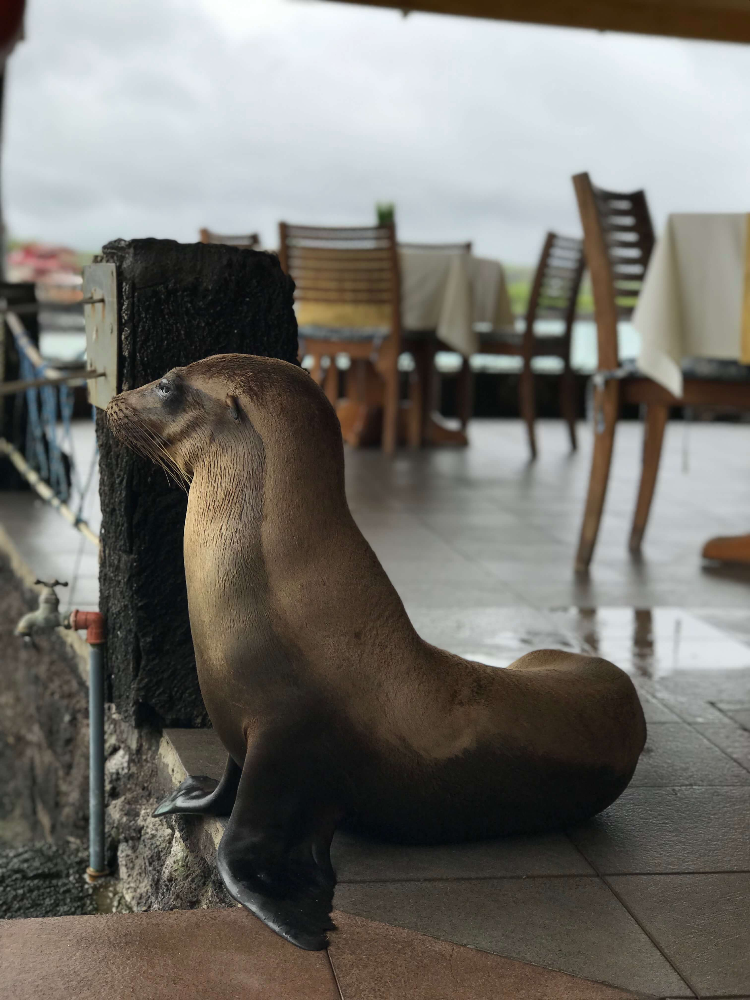

Check out some cool pics I took on vacation
Marine Iguanas
This is a Galapagos Iguana and you can see them everywhere when you visit the Galapagos Islands.
Sea Lions

This is a Sea Lion. They are also scattered all over the island and act just like puppies.
Giant Tortoises
These tortoises can live up to 150 years old. They are found higher inland because there is more rain in these parts of the islands